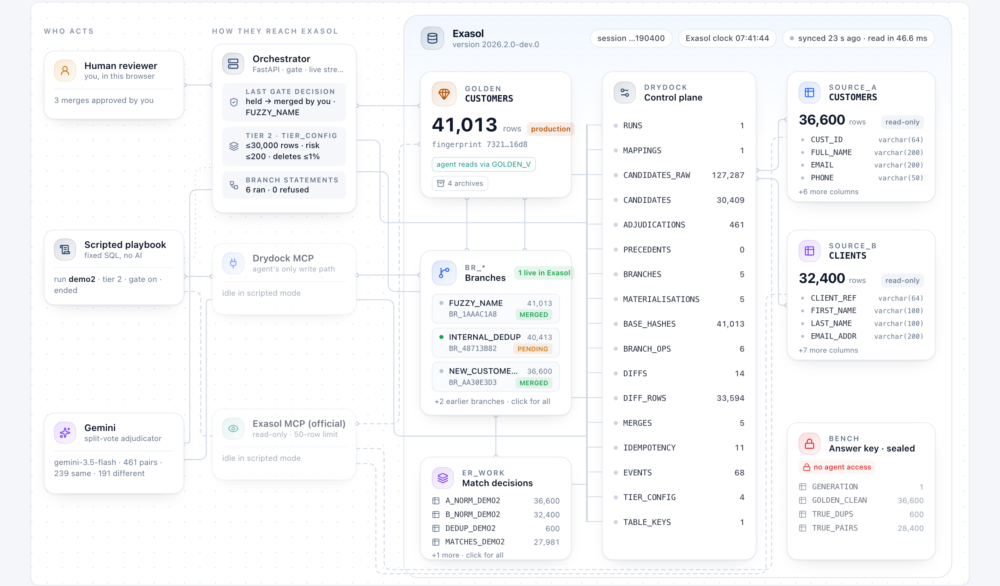
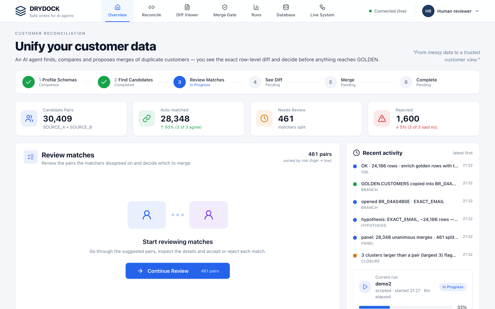

Safe writes for AI agents on Exasol.
The agent never touches production. It works on a branch, a person sees the exact rows that would change, and every merge can be undone exactly.
Governed changes
Observed impact
The problem
AI agents can now reach your database.
Writing is where it gets dangerous.
Reading
Agents connect through MCP and query data. Low risk: nothing changes.
Writing
One wrong UPDATE or a bad merge silently corrupts the customer master.
Today
Exasol's official MCP server ships with writes switched off. The safe write path is missing.
Approving an agent's SQL text is guesswork: it is a prediction of what the statement will do. Reviewers need to see the effect.
The solution
Approve the effect, not the SQL.
1
Branch
The agent gets a private copy of the tables it writes, inside Exasol.
2
Observe
Any SQL runs on the branch. Exasol hashes every row to compute the exact diff.
3
Gate
Small, safe changes pass. Risky ones wait for a person, who approves row by row.
4
Merge
Staged, fingerprint-checked, then swapped in atomically.
5
Undo
Unmerge restores the table; the fingerprint proves it byte for byte.
Discarding a branch is DROP SCHEMA. Production was never touched, so there is nothing to roll back.
How it works
Every moving part is a real event. Every number is what Exasol reports.

Built on Exasol
No extra infrastructure. Exasol does the work.
- Branch:
CREATE TABLE … AS SELECT into its own schema
- Diff:
HASH_SHA256 per row, full outer join on the key
- Match:
EDIT_DISTANCE, SOUNDEX, date maths, in SQL
- Swap: two
RENAMEs in one transaction
- Discard:
DROP SCHEMA … CASCADE
≈1 s
copy of the 36,600–41,013-row customer table
≈1 s
row-level diff of 24,186 changed rows
15–35 ms
the atomic swap into production
≈35 ms
throwing a branch away
Agents connect over MCP: Exasol's official server for reads, Drydock's for writes. Measured on Exasol Personal 2026.2 on a laptop.
The demo: customer reconciliation
Two messy systems, 69,000 records, 400 planted look-alikes.
- Three SQL matchers vote inside Exasol and settle 98.5% of 30,409 candidate pairs
- Only the 461 they disagree on go to Gemini, as comparison summaries: never a name or an email
- Gemini's verdict is advice. Split rows still wait for a person

The gate at work
The agent proposed ~28,000 merges.
None reached production without passing the gate.
Merged automatically
4,413
new customers, within the tier's limits
Held for a person
229
split-vote rows across 3 match classes, kept out of the merge
Delete guard
1.46%
deletes requested; the tier allows 1%, so a person decides
Exact undo
Exact
unmerge restores the table; its fingerprint matches the original
A reviewer sees every changed row side by side, unticks what looks wrong, and merges the rest. Rejections become precedents the adjudicator sees next time.
Results on the live instance
Measured against a ground truth the agent never sees.
27,980
of 27,981 proposed merges correct (precision 0.99996)
99.93%
of true matches found (recall), F1 0.9996
600 / 600
internal duplicates found, none wrong
38
live tests passing against Exasol
Every score is computed against a planted ground truth the agent has no access to, through a reviewer-only endpoint. The matcher, the gate and the database are each measured on their own.
Why it matters for Exasol
Exasol's speed makes "branch production for every AI change" the default.
Today
- A safe write path next to Exasol's official, read-only MCP server
- Built only on native Exasol SQL, no extra services
- Every decision audited in the database
Next
- An engine-level zero-copy clone would make branches near-free at any scale
- An autonomous Gemini planner, already wired to the same MCP tools
- In-database adjudication once a model is deployed on the cluster
Governed changes.
Observed impact.
Run it yourself: the README takes you from an empty Exasol to a live run.
github.com/paramvansh01/DryDock